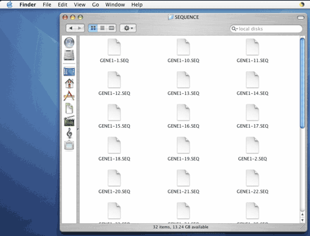
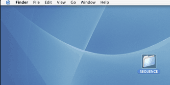
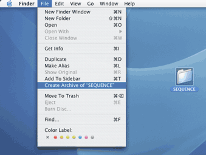

| 配列ファイルについてのzip形式のアーカイブの作成方法 |


| |
| 1. FASTAまたはplain sequence形式のバイサルファイト配列のファイルをフォルダに入れます（配列ファイルの拡張子としては".seq", ".fa", ".fas", ".fasta", ".ab1"または".txt"が使用可能）。 |
|  |
| 2. フォルダをクリックして選択し |
|  |
| 3. Finderツールバーの"ファイル"メニューから‘"フォルダ名"のアーカイブを作成’を選択します。 |
|  |
| 4. ".zip"の拡張子を持つzip形式のアーカイブが、元のフォルダの近くの場所に自動的に現れます。 |
 |
| |
| ZipIT!, CleanArchiver, MacZip, STUFFIT等のプログラムでzip形式のアーカイブが作成可能です。 |